YourFigmaMakeproject.Onyourlaptop.Insync.
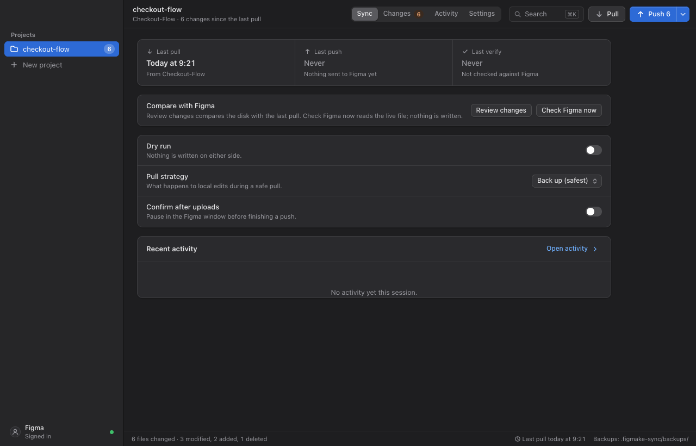
pullfromFigmaMake.
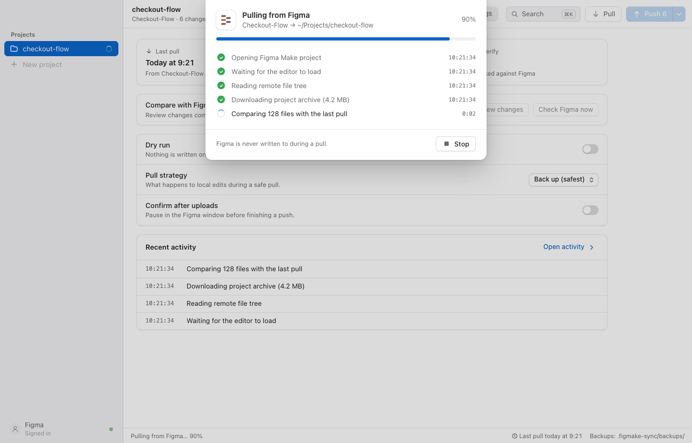
90%
edititanywhere.
VS CodeCursorClaude Code
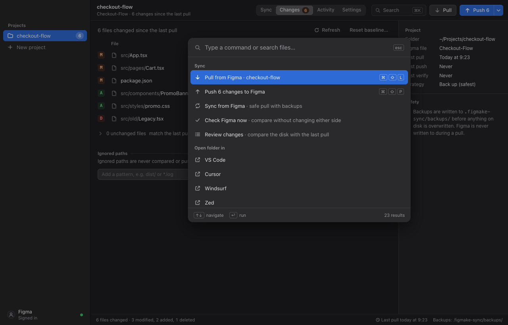
seeexactlywhatchanged.
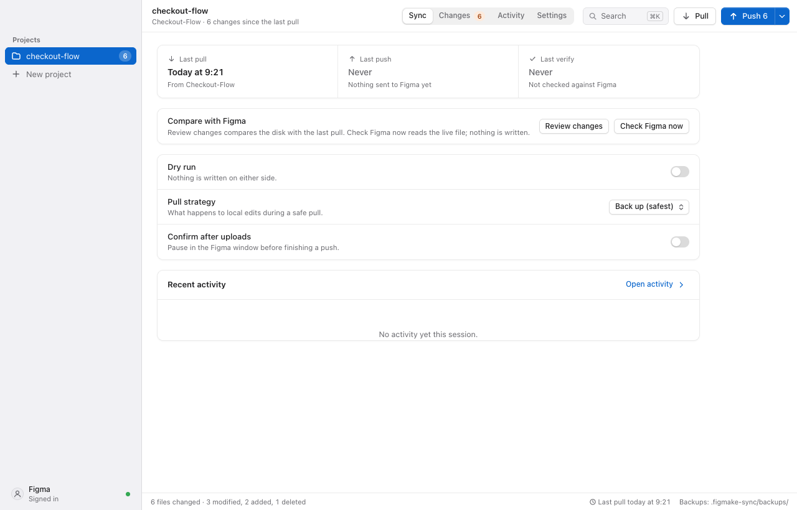
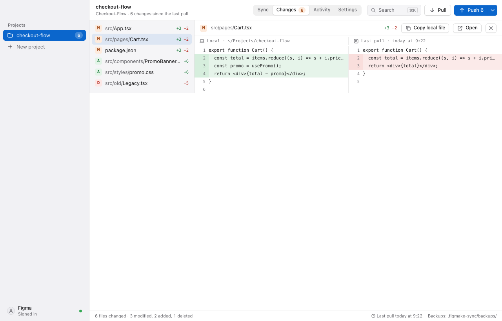
pushitback.
new in this release
noduplicatere-uploads.
src/pages/Cart.tsx
src/pages/Cart.tsx
src/pages/Cart.tsx
new in this release
nosilentoverwrites.
of Figma-side edits.
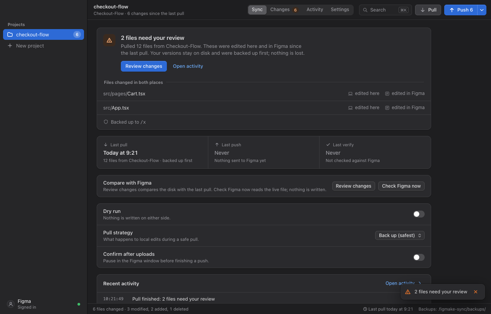
new in this release
saferpulls.backedupfirst.
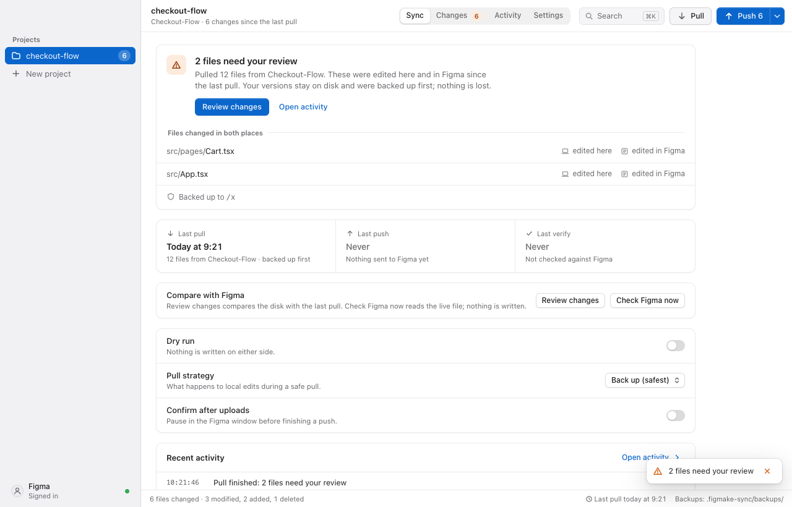
new in this release
acancelbutton.
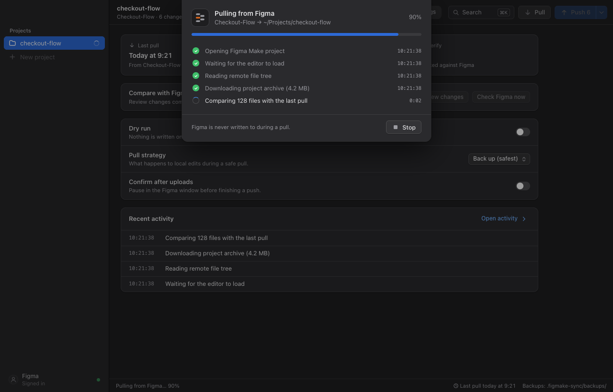
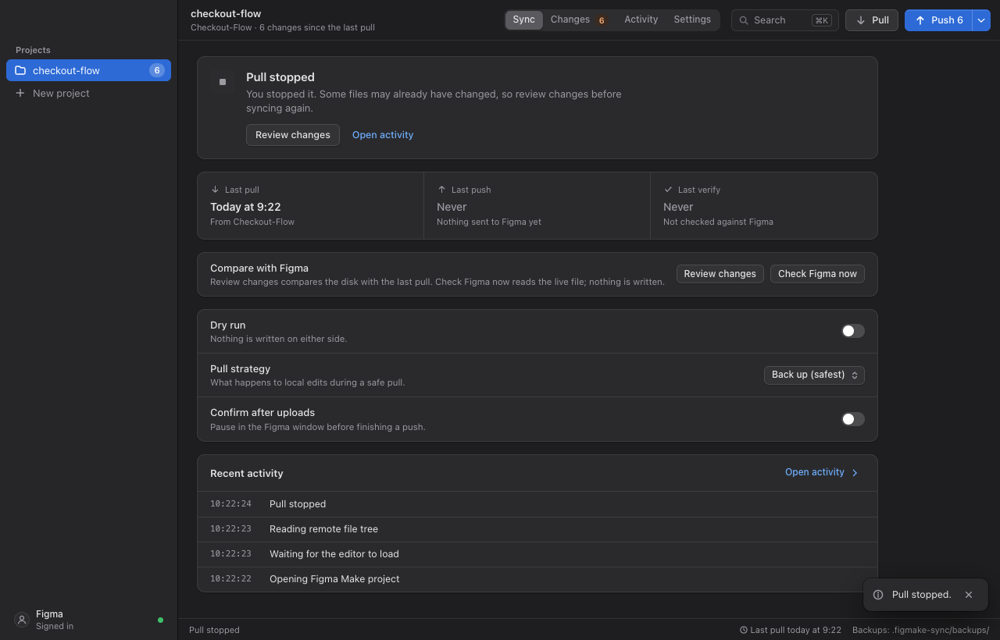
new in this release
newnativemacOS-styleUI.

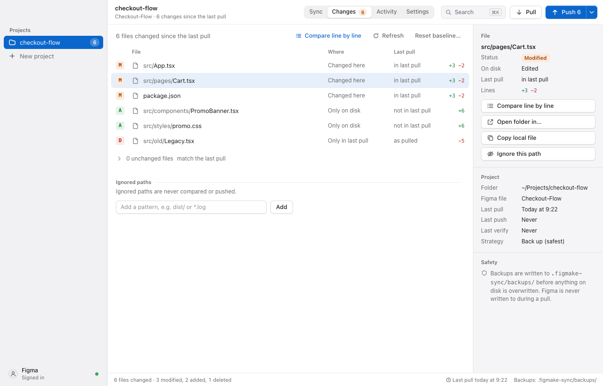
andanewlogo.
Free for Mac & Windows
sherlabs.com